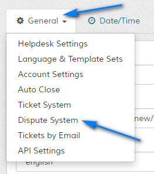
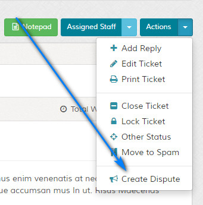
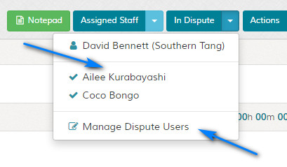
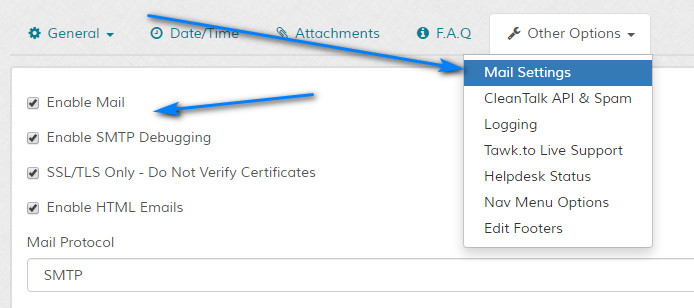

Questions & Answers
Questions
- How Can I Retain Options (control/options.php) in Future Updates?
- How Do I Assign Tickets to Other Staff?
- For the table headers, can I change the two backslashes?
- How Do I Find My Product Key?
- I`ve forgot my admin login details. Can I reset them?
- Can two people view the same ticket?
- All I see is a white page. Why?
- Can I resell the system?
- Will the system work with PHP7?
- Messages are being truncated with certain special characters. Is there a fix?
- How are tickets and disputes different?
- How do I create a dispute?
- Can I include the admin reply comments in emails?
- Can I upgrade from a previous version older than v2.0?
- Can I change the text in the software and add my own wording?
- 404/400 etc Error messages are pretty bland. Can I create my own?
- Can I edit the PHP files?
- Can I remove the website name from the email subjects?
- Can I load custom code from the main index.php files?
- Can I use multiple languages at the same time?
- Can I integrate the layout into my own site design?
- Can I add custom mail headers?
- Can I remove the version check link in the admin area?
- Can I edit the html mail template?
- Can I remove the Maian Support links in emails?
- How much do I have to pay for upgrades?
- Ok, I`ve purchased a licence. What do I do now?
- Can I open support tickets via standard emails?
- Can you recommend a good web host?
- What happened to the help tips in the admin area?
- What is Twitter Bootstrap?
- Where are the docs?
- Do you have any converters to convert from other software such as osTicket & Hesk?
- Can I get a discount for Maian Support, I`m broke?
- The code doesn`t validate because of the X-UA-Compatible meta tag. Is there a fix?
- Can I use boolean type search filters like proper search engines?
- How Do I Generate the API Key?
- Tickets opened by imap are garbled, why?
- Can I disable the logout confirmation message?
- Can I disable the admin dashboard graph?
- No emails are being sent, why?
Answers
How Can I Retain Options (control/options.php) in Future Updates?
Additional settings are found in the 'control/options.php' file. These are for convenience and not included in the admin
settings to over complicate things. To retain the changes you might make in the 'control/options.php' file so that future
versions don't overwrite your changes, do the following:
1 Save the 'control/options.php' file as 'control/user-options.php' in the 'control' folder. The system will look for this
file first. Make sure that ALL of the variables exist in the 'user-options.php' file. If any are missing you will see errors.
2 To revert back to the defaults, simply delete or rename the 'control/user-options.php' file.
How Do I Assign Tickets to Other Staff?
If you wish to assign tickets to staff, check the "Manually Assign Tickets to Users" box for a relevant department. When tickets are opened they will appear on the ticket assign screen.
TopFor the table headers, can I change the two backslashes?
Yes, edit the 'TABLE_HEAD_DECORATION' value in the 'control/options.php' file.
TopHow Do I Find My Product Key?
If you are using the none commercial version, in your admin area, click 'Purchase' on the top menu to view your product key.
If you don`t see this link, access the following link in your admin area: admin/index.php?p=purchase
I`ve forgot my admin login details. Can I reset them?
Yes. If you have forgotten your admin user details, you can use the pass reset option to update all team members. More information here.
TopCan two people view the same ticket?
Yes, via the dispute system.
TopAll I see is a white page. Why?
The loading of the software has failed and the error reporting on the server is set to not display errors. Check the "logs" folder to see if there are any txt error logs.
TopCan I resell the system?
Yes, if you purchase a white label licence. More info here.
TopWill the system work with PHP7?
Yes, the system is designed and tested on a PHP7 platform.
TopMessages are being truncated with certain special characters. Is there a fix?
MySQL cannot properly handle four-byte characters with the default utf-8 charset up until version 5.5.3. The only workaround is to convert these characters to a question mark. Maian Support does attempt to do this automatically. If you still have issues, I`m afraid there aren`t any current solutions, other than to upgrade your MySQL version.
TopHow are tickets and disputes different?
A ticket is a standard communication between the person who opened the ticket and admin. A dispute can be seen by multiple users and admin. So, for example, lets say you run a games site and 2 users are in dispute. User 1 can open a ticket and user 2 can then be added to the same ticket via the dispute system. Both users can then see each others replies.
TopHow do I create a dispute?
You must first enable the dispute system in the settings, this is disabled by default.

Then to create a dispute from a ticket, click to view the ticket and then click 'Create Dispute' from the top bar (this is not seen until the dispute system is enabled), this turns the ticket into a dispute.

You then have to add other users to the dispute via the dispute management drop down.

Can I include the admin reply comments in emails?
Yes, use the following variable in the reply email templates:
{REPCOMMS}
Can I upgrade from a previous version older than v2.0?
Sorry, this isn`t possible.
TopCan I change the text in the software and add my own wording?
Yes, see the language section.
Top404/400 etc Error messages are pretty bland. Can I create my own?
Yes, just edit the files in the "content/*theme*/headers/" folder.
TopCan I edit the PHP files?
All files may be edited, except the files in the following directory:
control/system/core/*
You must NOT edit any of these files or the system will fail to load.
Can I remove the website name from the email subjects?
Yes, open the "content/language/*/lang4.php" file and edit the values in the $emailSubjects array.
TopCan I load custom code from the main index.php files?
Yes, see the HTML Templates section.
TopCan I use multiple languages at the same time?
Yes, see the note on the languages page.
TopCan I integrate the layout into my own site design?
Yes, you`ll need to edit all the template files in the 'content/*theme*/' folder. Click here for more help.
TopCan I add custom mail headers?
Yes, you can add custom mail headers in the following file: control/classes/mailer/mail-init.php
TopCan I remove the version check link in the admin area?
Yes, edit the 'control/options.php' file. Set the 'DISPLAY_SOFTWARE_VERSION_CHECK' value to 0. Note that this ONLY displays
for administrators.
NOTE: The version check option sends ONLY the version number and script ID to the Maian Script World servers for version comparison. No user
identifiable information or information relating to your setup is sent.
Can I edit the html mail template?
Yes. More info on the email templates here
TopCan I remove the Maian Support links in emails?
Sorry, not in the free version. The commercial upgrade removes this option.
TopHow much do I have to pay for upgrades?
Nothing. Upgrades are FREE.
TopOk, I`ve purchased a licence. What do I do now?
Firstly, go to the Maian Script World Licence Centre and log in with the username/password sent to you in the email you received after purchase. If you
didn`t receive this email, please contact me via the Maian Support website.
Once you have logged in, use the options provided to generate your licence. Your new licence file will be included in a zip file along with a readme file. You should
replace the default .lic file with your new one. This will unlock the free feature restrictions.
Can I open support tickets via standard emails?
Yes, of course, see the imap section.
TopCan you recommend a good web host?
There are lots of good web hosting companies around. Try a search on Google. Read what other people say.
TopWhat happened to the help tips in the admin area?
They were removed in v3.0 in favour of the direct link to the docs via the "Help" link on the top bar.
TopWhat is Twitter Bootstrap?
It is a free, open source development framework. More info here.
TopWhere are the docs?
You are reading them (I kid you not).
TopDo you have any converters to convert from other software such as osTicket & Hesk?
These are in the pipeline, but are not available yet. Please keep checking the Maian Support website.
TopCan I get a discount for Maian Support, I`m broke?
Regular monthly discount coupons are emailed to subscribers of my newsletter. Its an infrequent newsletter. You can unsubscribe at any time.
TopThe code doesn`t validate because of the X-UA-Compatible meta tag. Is there a fix?
A known issue. You might be able to find a fix. Generally its nothing to worry about and can be ignored.
TopCan I use boolean type search filters like proper search engines?
No, sorry. The MySQL FULLTEXT search options are not enabled in Maian Support as they cause more problems than they are worth, especially with small words. They may be revised in a later version. The imap ban filters still use FULLTEXT searching for speed.
TopHow Do I Generate the API Key?
API key is created in the API Settings.
TopTickets opened by imap are garbled, why?
See the notes here.
TopCan I disable the logout confirmation message?
Yes, edit the "DISPLAY_LOGIN_MSG" option in the "control/options.php" file and set it to 0.
TopCan I disable the admin dashboard graph?
Yes, edit the 'control/options.php' file. Set the 'SHOW_ADMIN_DASHBOARD_GRAPH' value to 0.
TopNo emails are being sent, why?
Check your server error logs first. If you are using SMTP, you should also enable SMTP debugging to help debug mail issues. To enable, check the "Enable SMTP Debugging" on the mail settings page via
the "Other Options > Mail Settings" tab.

The "mail_debug_log.log" should be written to the "logs" folder.
If you are having issues sending email over SSL, this is nothing to do with this software or the mail system used by this software. Most likely
your server`s SSL is installed incorrectly as PHP5.6 or higher expects it to be installec correctly. If you have issues, you can disable SSL certificate checking via the following mail setting.
SSL/TLS Only - Do Not Verify Certificates
Enabling this will allow insecure connections. Whilst this is a workaround, it is NOT recommended.
If you are using the PHP mail function, you must view your internal mail logs for issues.